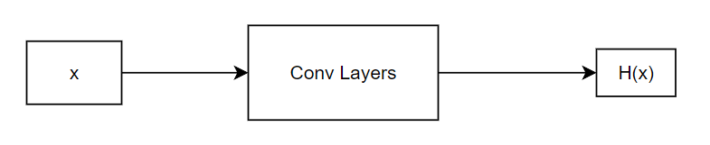
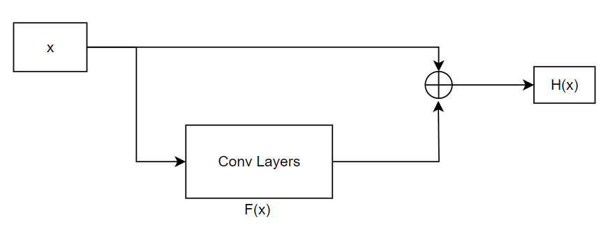
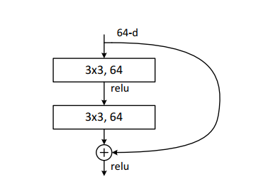
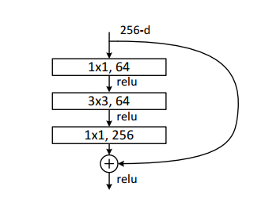

ResNet
ResNet 残差神经网络
这个网络也是老早就知道了，但是一直没有自己训练过，今天也是自己训练了一下，证明其有效性
1.基本思想
假设某一层的目标数是H(x)，即输入是x，输出是H(x)

传统的思路是：直接让该卷积层学习映射H(x)
而残差网络的基本思想就是：把输出H(x)看成输入x再加上网络的输出F(x)，这样卷积层需要学习的映射就是F(x)=H(x)-x

残差神经网络的可解释性：
在传统的卷积神经网络中，网络的每一层都会通过非线性激活函数将输入映射到下一层的特征空间中。然而，当网络变得非常深时，由于信息必须经过多个非线性变换才能到达最终的输出层，网络的训练和优化过程可能会变得非常困难。
残差学习通过使用残差块（residual block）来解决这个问题。每个残差块都包含了一个跨越网络层数的跳跃连接（shortcut connection），使得网络可以直接从输入跳过一些层直接到达后面的层，从而减轻了每层需要学习的变换，降低了训练难度。此外，梯度可以通过跳跃连接直接传播，避免了经过多个非线性变换时可能引起梯度消失的情况。
2.构建方法
既然这个模型非常常用，那么我们必须了解如何在
pytorch中定义/使用这个模型
在torchvison.models.resnet中已经给出了该模型的定义，在使用resnet时需要选择block和层数
2.1block
block就是残差块，resnet论文中给出了2种形式的残差块
(1)basic_block：该残差块用于层数较少的resnet模型

(2)bottleneck：该残差块用于层数较多的resnet模型

相比于BasicBlock，Bottleneck 的计算复杂度更高，但它可以减少特征图的大小，避免过度堆叠卷积层导致的信息丢失。此外，Bottleneck 中的 1x1 卷积可以降维和升维，从而减小了计算成本，提高了模型的效率。